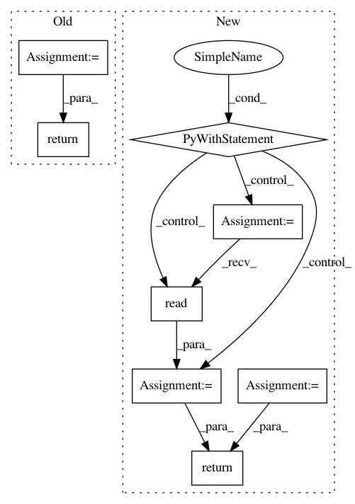

a30c31849a1ce6791ad201f09507c2f2dfe6db27,tensorflow_datasets/core/features/image_feature.py,Image,encode_sample,#Image#Any#,103
Before Change
// TODO(epot): Should clear the runner once every image has been encoded.
// TODO(epot): Better support for multi-shape image (instead of re-building
// a new graph every time)
image_encoded = self._runner.run(ENCODE_FN[image_format], np_image)
return {
"encoded": image_encoded,
"format": image_format,
"shape": np_image.shape,
}
def decode_sample(self, encoded_image):
Reconstruct the image from the tf example.
tf_image = tf.image.decode_image(
After Change
def encode_sample(self, image_or_path):
Convert the given image into a dict convertible to tf example.
if isinstance(image_or_path, np.ndarray):
encoded_image = self._encode_image(image_or_path)
else:
with tf.gfile.Open(image_or_path, "rb") as image_f:
encoded_image = image_f.read()
return encoded_image
def decode_sample(self, sample):
Reconstruct the image from the tf example.
img = tf.image.decode_image(sample, channels=self._shape[-1],
In pattern: SUPERPATTERN
Frequency: 3
Non-data size: 8
Instances
Project Name: tensorflow/datasets
Commit Name: a30c31849a1ce6791ad201f09507c2f2dfe6db27
Time: 2018-11-08
Author: pierrot@google.com
File Name: tensorflow_datasets/core/features/image_feature.py
Class Name: Image
Method Name: encode_sample
Project Name: GoogleCloudPlatform/PerfKitBenchmarker
Commit Name: 0ef51ea4a3c9f9c8c7c0579f0a8d0d372acce01c
Time: 2015-01-13
Author: yuyantingzero@gmail.com
File Name: perfkitbenchmarker/benchmarks/fio_benchmark.py
Class Name:
Method Name: Run
Project Name: studioml/studio
Commit Name: 8bc3ada5028661b5f42cf624f7f88444d22ec7f0
Time: 2017-11-17
Author: peter.zhokhov@sentient.ai
File Name: studio/ec2cloud_worker.py
Class Name: EC2WorkerManager
Method Name: _get_image_id